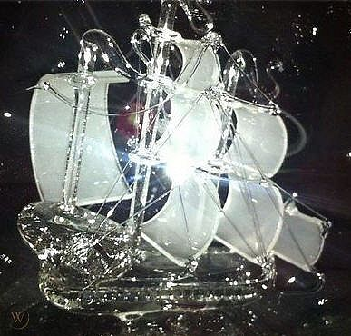

| |
|
|
|
|
|
|
| |
|
|
|
|
BETWEEN WATER AND THE SKY:
THE CRYSTAL SHIP'S MEANING AND CONTENT
by Sonia de Pascalis
Once, among some of the Doors admirers, a question rose on what
exactly the 'crystal ship' ’s poetic figure
represents.
I came up to some considerations, which I would like to
share on this honored magazine.
The image itself represents a man's soul seen like a
solid, fragile, sensitive, perceptively pure and
transparent body,
but also a mystic vehicle, both individual and
collective, for reaching the world of total experience of
reality.
This ship, to me, seems to be able to travel through both
sea and air, like in a nightly shrouded great ocean of
darkness.
And here the story begins....
It is made of crystal which, be it natural or handmade,
is a mystic material connected to vision and associated
to the power of purifying, empowering and filtering
spiritual energies and vital forces.
The purified senses stand in the transparent and lucid
crystal which also usually shines in glimpses.
On one level, the ship is a symbol of the poet's soul,
sailing away successfully, although through suffering,
from a sentimental world of defeat, after the breaking up
of a loving relationship, despite whatever will
become of his lost partner.
But there is more than this, another level of meaning,
philosophical and empirical.
In this other dimension, on one hand, the crystal ship
is still the metaphor for the soul itself, but seen
outside of the
sentimental realm: it is a person's spirit, sailing pure
through an experience travel and towards the paradise
world
of total vision of reality.
Somewhere it has been said that this ship has the
capacity of reading in its helmsman's mind...
On the other hand the ship is a collective vehicle: it is
a medium that calls the soul, leading to the vision, like
during the
journey, like at the end of it. This paradise, the final
destination world, can be opened by collecting every
experience made
during the journey and at the same time it is built
gathering together the results of many experiences,
levels and states
of consciousness from a single person and from a group of
people: the ship is made for and from getting together
such
individual states of mind and perception.
As a vehicle for the spirit, it is the pure and
transparent means allowing the vision of the world
outside,
and to filter and store on board things that a passenger
relinquishes along the travel.
On board you find people and other ways of experiencing,
feeling and having emotions.
But these things are, at the same time, belonging to
three different levels: first, things you get by the ship
itself, second,
experiences stored inside it, from the outside world
along the trip. Finally, they are also adventures that
happen in life on
board with other travel mates.
Jim Morrison directly revealed that the image of the
crystal ship was taken from a figure named in 'Connla'
's tale,
a legend contained in the ancient Irish 'Lebour na
hUidre' (in English: 'the Book of the Dun
Cow'), and from there it takes its
basic meaning of a sacred and mystic vehicle to a
paradise world of blessed experience, populated, among
the rest, by
thousands of women. The most that is renown about this,
is reported by Chuck Crisafulli in his 'Moonlight Drive:
the stories
behind every Doors song'. He says Jim talked with
Patricia Kennealy-Morrison about the celtic derivation of
'the Crystal Ship'
theme, that he knew Connla's legend and that it
came from 'Lebour na hUidre'. I can't say if he
actually read the original
story, called 'Etchra Condla Chaim meic Cuind
Chetchathaig', included in 'The Book of the Dun
Cow', or just some report of it,
which anyway are rare and precise. From the clues, Jim at
least got it from from a very faithful version, probably
'Connla of
the Golden Hair and the Fairy Maiden' by Patrick
Weston Joyce, who in his book 'Old Celtic Romances'
revealed the legend's
origin and gave its reference. Morrison grabbed the
original to some extent, or really read it too. One of
the reasons is that
Connla's story comes from two ancient manuscripts,
but in Morrison's case, just 'the Book of the Dun Cow'
is always
reported. I only doubt the availability of its readable
copies outside Ireland. Anyway, he knew enough of it, and
so I'll name
the tale Jim meant as 'Etchra Condla' 's.
|
|
|
|
| |
|
|
|
|
|
|
| |
|
|
|
|
|
|
| |
|
|
|
|
|
|
| |
|
|
Morrison sees in
that crystal vessel a means of perception and knowledge,
that also enshrines in itself a world of
perfected experience, which there isn't in the original
tale. He sees it as the paradise of cleansed experience,
in
William Blake' s and Aldous Huxley's perspective.
Speaking strictly about the Crystal Ship's figure,
analogies with Blake’s poems are limited to the
theoretical aspect,
and just to a superficial direct reference: it is highly
presumable that Morrison slightly made the
superimposition
between this author's world and the tale of Connla,
before he wrote the text which would become the lyrics
for the
Doors song ‘The Crystal Ship’.
In fact, he had already done it while reading 'Etchra
Condla' 's tale for the first time, in some moment
before finding
himself involved in a particular happening, which
triggered and produced the very intuition and composition
of 'The
Crystal Ship' itself.
But just in that very moment he kind of came to the real
understanding of what, to him, the crystal ship of 'Etchra
Condla' was.
The ship of visionary experience itself was taking shape in front of
his eyes. Only now he experienced and
understood
it fully. Many Doors admirers know that this image, and
maybe the whole poem, was inspired by the lights of an
oil
tanker or plant, which Jim saw offshore either of isla
Vista, a littoral of Santa Barbara's (urban legend
strongly says,
or wants to believe), or from one of the L.A. beaches
(Santa Monica or even Venice itself).
He saw these lights floating in the deep darkness of the
all-in-one abyss of the nightly ocean and sky, altogether
fused: in that very instant he must have done the match.
In fact, the scene could only immediately recall him the
mystical ship of Connla, the curragh (which
in the story is
actually called a boat, and more often a canoe: 'strong
and swift', in Joyce, Noi Glano – Curragh of
Pearl / Loing
Glano – Curragh of Crystal', in 'Etchra
Condla').
A 'Straight gliding, strong, crystal canoe'
which can protect prince Connla 'from druids and the
demons of the air',
since, like Crisafulli smartly described it, it is
capable of flying, more than sailing, over sea or land,
during his travel
towards a Fairyland (Mag Mell – the Plain of
Delights). This land, in Celtic tradition, is an
eternal realm after death,
accessible to the sacred kings, like Connla. Religiously,
Connla represents the immortal part of the king's soul.
It
was believed that if this part of the king's soul went to
reside forever in that realm, it would allow the rest of
his
spirit to be reborn into his kingly successor in the
earthly world.
Jim had probably already made the match between this
paradise, plus the crystal ship as a container, and
William
Blake's concept of Belulah, the heavenly dimension
attained by 'breaking through' (which is not a concept
namely belonging neither to Blake, nor to Aldous Huxley).
Besides that, in their imagery these things are
represented with some precise objects, but there are no
ships.
That night, Jim was on his way to make up his mind about
his break up with Mary Werbelow.
Both the Irish tale and a particular poem of William
Blake, the Crystal Cabinet, involve the sensual
relationship with
a woman as the medium to access this paradise world, and
the crystal object as the instrument in their pertinence,
to accomplish it. And so the match was made. But Blake
talks about a partially betraying and false love
intercourse,
and Morrison rewrote his own idea of the story told in
the Crystal Cabinet in all the first part of his
poem-song, the
only one where he actually talks about Mary and him.
Things change when the crystal ship's vision comes
in: it suddenly tells another story from Blake's, and it
follows
the only reference Jim willingly recognized, Etchra
Condla.
Surely, from the very first time he met the Irish tale,
he had been knowing that the crystalline dimension that
Blake
does use in his imagery, to him, were more likely a ship,
than anything else.
But until that very moment on the beach, he hadn't
visualized it so clearly and definitely.
Suddenly ... it appeared the real presence of an
enlightened structure in the floating black ... and Jim
saw the whole
thing from a totally different aspect than Blake's
imagery.
Just focusing the scene amidst the ocean, he understood
that for him the purified senses and their perceptions
container where nothing but a ship, sailing exactly in
that way, no matter how his literary mentors represented
them.
And now it was just manifesting itself in front of his
eyes, together with all his romantic struggling for the
end of his
last long term love relationship.
In the same way, he was aware that where Condla's
canoe differed from Blake's concept, it had all the
characteristics
of Rimbaud's intoxicated boat.
The curragh is not just the sea godess
Manonnan's boat / womb, but it knows and moves
according to its passenger's
and conductor's mind.
|
|
|
|
|
|
| |
|
|
|
|
|
|
| |
|
|

|
|
|
|
| |
|
|
|
|
|
|
| |
|
|
|
|
Like the Irish legend, both Rimbaud and Morrison use a boat to
symbolize a place of totally free experience and
perception,
and at the same time the experimenting soul and senses of
the poet.
In 'le Bateau Ivre' ('The Intoxicated Boat'),
Rimbaud metaphorizes himself as the vessel, whose body
dips in and directly
absorbs the effect of the sailing experience.
In Morrison's case, the self identification with the ship
is also the natural consequence of the fact that it comes
out in the middle
of him writing about his feelings for parting from Mary:
it springs out by a subjective, first person and
sentimental stream of
consciousness, and thus he visualized it in this
particular way.
The ship is Jim's own reaction to the situation he was
living, absolutely opposite to what Blake represents in The
Crystal
Cabinet. Jim's ship represents the world of
imagination and experience, and not love anymore. It is a
declaration of taking
possession of freedom from the restrictions of moral and
of control, exactly like it is in the Intoxicated Boat.
But the presence
of Rimbaud in this poem is so fused to Morrison's concept
of the ship, that it is neither quoted, nor imitated.
It is embedded and embodied in the ship's image itself,
and replaced directly by the author's own original
vision.
When he was inspired to write this poem song, anyway, Morrison
figured it out as an expression of Blake's general
concept:
there is a world of cleansed vision of things, accessible
by man in certain states of mind or during certain life
experiences such
as, also, love relationships, sexual intercourse and
their effects (for Jim the ship in the Book of the Dun
Cow automatically
meant this).
But Morrison's crystal ship has another original
characteristic, both in front of the Irish tale and of
Blake's: the protagonist
identifies his own spirit with the ship, but at the same
time he sees himself as its passenger. A totally
unprecedented
association of both these aspects together.
At the climax point, conditioned by the sight of an
enlightened ship or plant offshore in the ocean, in
reality outside, he
identifies himself with it, in this double sense.
Another original aspect of Morrison's ship: it is a
collectively built medium, that picks up a group on
board.
A shared medium of vision, of experiencing and storing
knowledge together with one another, which he'll
represent again in
The End’s ‘blue bus’ and
other symbolical vehicles scattered throughout his lines.
John Densmore has suggested that the ship represented the
Doors themselves: he totally grabbed its core meaning,
though
I wouldn't namely identify it with the group itself.
It surely represents the music and the artistic project
that they were building on: creating a conceptual and
spiritual vehicle for
opening minds, as his personal example to indicate a
universal collective medium for accessing the hidden
realities which
lead to interior rebirth or resurrection during life
course. The crystal ship is more than the music:
it's the Doors songs, and
among the passengers, the musicians are the crew
(again... The End: 'driver where you're taking us',
meant like acid but also
and mainly like the drivers of the music bus calling the
audience: them four). More, 'it is this song',
forming the crystal ship in
people's minds, bringing people on the trip: it builds it
up, fusing Jim's love loss feelings with the outbreaking
world of all
experiences that he has had and that he is having. This
way, he sails away from 'Mary's womb', with his soul
untouched, nay,
forged by their own sad epilogue, though thru' the sea of
sorrow and parting. This vehicle, created by the song,
with the crystal
ship evocation at its core, makes of his experience with
Mary too, one of those, although a main one, which and by
which his
soul's ship, and the ship of collective experience, is
being filled.
I would say it symbolizes the context and texture of
their artistic progress, in which Jim saw himself and the
others involved
and dipped (or 'drowned'...) in.
But Jim's intent went beyond it, over the material and
subjective identification with the Doors, their music and
their songs: they
are the practical example in Jim's life to indicate
universally any collective spiritual means of ecstasy and
mind intoxication that
people can build, and so it shall be seen.
This poem, anyway, says that the Doors embodied the
context in which those ideas were taking shape, opposed
to what Mary
and his relationship with her represented. On them and on
those ideas he leverages to overcome altogether what was
going on
with her and it all, ‘breaking on through’.
People uphold that it represents something fragile and
apparently stately as only a troubled love can be, and
that exactly this is
the central theme of the story Jim Morrison tells in the
song.
I believe that the description of a troubled love with
some fragility at the bottom, immortalized in its moment
of trespassing, is
actually one if the leading meanings of the text. But
love here is the only frangible thing: the ship is also
this, and a lover's spirit.
In the figure, this feeling is visually represented as a
force to set one free, in a forceful crystalline
appearance; the ship is not
shattered, nor it appears easy to be crushed, though the
poet's heart could be.
But in truth this love is characterized over all by some
stateliness, a far from frangible lover's spirit, which
is not just apparent,
although it leaves some permanent scars at its bottom.
This moment of sentimental trespassing is a real break
on through, to
use the proper words, which involves a concrete
acquirement of strength and overcoming, still leaving
those scars visible.
More, the surrounding lyrics and the story talk about
this love theme, but the crystal ship's
figure itself is apart from it, and it has
got nothing to do with the sentimental declarations about
Mary and Jim.
More than ever, it is a picture of breaking through in
the purest Doors sense, the symbol of the
protagonist’s decision how to
conduct his own life, both in biographic sentimental life
and emotional-active life.
But first of all, the crystal ship is the world of
expanded perceptions, of the purified inner reality
inside, the embodiment of the
strong and bright spirit of the poet and the figure of
cleansed experience which brings this spirit to come to
life and shine.
As the poet's spirit, it symbolizes the experimenting
soul, although it involves also his sentimental side (but
not directly his heart,
even if it remains as a secondary shade in background).
It represents the figure of a cleansed experience,
general, absolute, but also an individual and collective
one (first, the collective
archetype of experience itself, second, the individual
world of experience).
It is a sort of transparent shrine including it, which
leads to the polished world of perception and produces
that subjective spirit
itself. Its shining and clear sides are already
themselves that world and its purity, but at the same
time they also embody the
cleansed senses and mind swallowing it.
In conclusion, this ship of experience is inspired by the
vision of the oil tanker or plant in the ocean, all
enlightened, transformed
into Jim Morrison's own specific existential-sentimental
version of 'Etchra Condla' 's ship, and
of the intoxicated boat.
|
|
|
|
| |
|
|
|
|
|
|
| |
|
|
|
|
|
|
| |
|
|
|
|
|
|
| |
|
|
A friend of mine, Alessandro
Amoroso, took in a lot of the suggestions for 'the
Crystal Cabinet''s involving, and
compared the crystal ship to Blake's metaphor, because
both poems express a dream of freedom, the desire of
the other side, love like a way of setting oneself free,
unbound and intact again, getting rid of reason, and a
way of changing.
But as I argued before, the figure mainly remains
referring to 'the Intoxicated Boat', in its
figurative concept,
because Rimbaud's poem already has all of these contents.
Except for the one of love: but from this, Morrison
takes the flight.
To be precise: he takes the flight from this delusional
love. Unlike Blake, and like, instead, Rimbaud. In the
french
poet's case this happens not from love, but from the
delusions of people and of the social state, who didn't
welcome the existential change and didn't permit to the
material reality to take profit of the fruits produced by
total experience, and by the systematic derangement of
all the senses.
It wouldn't allow the poet to live it in the world that
he really wants to live in: the earthly one, and forces
him in
the imagination paradise of poetry, which at length means
death, and estrangement from any reality. William
Blake, in 'the Crystal Cabinet', loses the world
of heaven, Belulah, just to end tossed out of the
Earthly world,
Eternity, through a forced rebirth of him as a
child, more in woes than crying out for a new life, and
of his lover
as a blindly suffering woman after giving birth: they
both find themselves in the hell of suffering, Ulro.
On the
contrary, the trip to the Fairyland of Etchra Condla
is a solemn promise and premise for the kings
reincarnation,
although by another part of his spirit.
Rimbaud's travel as the intoxicated boat, has no
full and happy return to the earthly world he misses: he
remains
ideally into the ocean of his boat's adventurous travels,
and at the same time he projects himself back at home
like a child playing in a water pool with a paper boat,
resigned to keep his gained freedom of existence intact
and
bring it in real life, in the restricted ways he can. Not
the ideal one, but there is a way back. The poet himself
wants
and forces it: the important thing, 'when everything
else fails' is to keep a constant personal rebellion
into his own
spirit.
The same thing does Jim: he goes straight to achieve
paradise and has all intentions to hold it, but: 'When
we get
back, I'll drop a line'. He's saying Mary that for no
reason at all his fall in experience with her has
precluded him the
earthly world and condemned him to hell.
We could say that, in the crystal ship figure,
like in the second part of Morrison's poem, Blake is just
an allusion,
just like 'crystal' is an adjective. The noun,
'ship', says of 'Etchra Condla' 's and 'the
Intoxicated Boat' 's basis.
Afterword:
a deepest analysis of some lyrics, to complete the meaning
of the ship. Jim, Mary, and
the pure world of perception:
What does the crystal ship mean to the rest of
the text? To get this, we must go back to the verses in
the
previous strophe.
'Oh, tell me where your freedom lies
the streets are fields that never die.'
In these lines Morrison takes the distance from his
love pain and its implication with his loved one: he says
that
the ways of experience and of life itself, which they had
both chosen, but especially hers, are wearing and
impenitent places.
That is to say, intense but also tiring, above all when
you are alone.
That question, 'where your freedom lies', is the
way off the romantic sentimental world.
The ship is exactly that freedom he's talking about, the
freedom to experience in general, freedom of
experiencing,
freedom to emotion, freedom of emotions and towards other
feelings too.
In this ship women and trips, or emotions (originally
indicated as 'pills', then changed into 'thrills'),
represent both
the actual passengers of the collective ship, and the
content of any individual's inner boat.
We'll see further that the ship's passengers (girls and
pills / thrills) are single elements of experience in
general,
collective aims, which crowd the vessel, but at the same
time other people who climb on board to take this sailing
trip, the others in this experience. The poet's spirit
trip mates (still, girls and pills / thrills) are both
other companions
and reasonable contents of the poet's mind and soul,
elements of ‘knowledge’, another crucial word
to Morrison.
In the background of this all, the picture draws a
natural sentimental fragility in experience and emotions
and for a
shattered love feeling, but at the same time it contrasts
it.
This is the feeling of a sentient animal with a fragile
but forged and reborn sensitive soul.
From this point on, all over the second part of the song,
the poem transforms into a taking of a position: Jim
states
he has made up his mind both sentimentally and
‘ideologically’.
'Deliver me from reasons why
you'd rather cry
I'd rather fly.'
Before all, he seems deluded by her choices in life.
She prefers to cry, leave him and chase certain
ambitions, pursue
perspectives of mind & experience openings, material
& artistic, different from his, more materialistic of
those Jim
tried to dream of and plan with her (in another song,
'… the end of our elaborate plans …'),
be them sentimental or
professional.
|
|
|
|
|
|
| |
|
|
|
|
|
|
| |
|
|
|
|

|
|
| |
|
|
|
|
|
|
| |
|
|
|
|
He wanted to walk some artistic
path with her, but not in the direction she seemed to
lead, not to be a valuable
partner for such an interest she demonstrated (the double
sensed picture which emerges in 'Twentieth Century
Fox' may be well related to this). It feels like he
saw himself as a partner that now seems an inconvenience
and
even an obstacle for possible alternate relationships or
sexual experiences. Like he felt her need for other
experiences as a pretense to leave him or take time. On
the other hand he wouldn't think of them as an obstacle
for their staying together, or at least he was beginning
to think about it that way. Now one that once seemed a
reasonable earnest need of hers, appears to be a shaded
excuse or a hiding of the fact that she doesn't love him
anymore.
Still, painfully, disarmingly sweet, he had whispered
her: “the streets (in general, but in
particular the ones of you
walk in your life) are fields that never die”.
They are wearing, they offer no shelter. But then, 'deliver
me from
reasons why...'
‘Why do you want to embrace the limited
experience world?’
He seems to tell her: 'Your plans are all the result of
this choice, not opening the doors of perception, and so
you
prefer to suffer, make existential choices that are not
needed, where no renounces would be requested'. 'Why
you'd rather cry' means, ‘Why choosing the
limited experience world?’.
'I'd rather fly': I prefer to fly in the expanded
world of perceptions, of all inclusive love and love
experiences, of
an artistic world of life and creation... with it the
poem has already become an oniric declaration, and the
oniric
detachment of Jim's from Mary’s.
It indicates the severing of his perception of experience
from the need to consider her, as his lover, a means to
access it.
Looking back, in the second strophe of the text, 'enclose
me in your gentle rain', he still aimed at it for a
last time:
the poem had begun with the statement of wanting to have
'another kiss, another flashing chance at (that)
bliss'
though just to let her 'slip into unconsciousness'.
He wants to forget her, or better, chop off his loving
bound, in part, and Mary's role as a sensuous mean of
experience, in total. He doesn't recognize her as a muse
anymore. I mean a muse in this very particular sense,
and not in the conventional one (a last chance of holding
her as a way to sentimental and perceptive bliss –
Jim
used this very line just to express, also, one of his
ways to drinking, where every glass is a bet to access
the
bliss of perception, one more moment of bliss, or to pass
the line and get into emotional and intellectual hell,
confirming that 'another chance at bliss' alludes
to the kiss, or anything else in its place, as a medium
for
accessing that dimension).
But it seems impossible to have neither the kiss nor 'a
last access to bliss', so right now, with 'Deliver me
from
reasons why / you'd rather cry, I'd rather fly' he
makes up his mind to get rid of it. It is such a radical
decision,
that he even moves away from his original desire and
intentions of pursuing a last farewell moment, from his
need of it. He gives up the idea of accessing End of
the Night's 'realms of bliss' by their tender
bound, even for a
last time. 'I'd rather fly', then: the oniric
leave-taking.
And so comes the crystal ship, which 'is being
filled', originally, with 'a thousand pills',
both in the sense that it
consists of them (there is no “of”), and in the
sense that this “of” is implied: like people,
like pills are gathering
on board, the ship is being loaded (the ship with people,
people with experience. Filled by other people, and by
thrilling experiences), about to depart.
I think the change from 'pills' to 'thrills'
wasn't just convenient for censorship reasons, but it
also shows that 'pills'
indicated rather the effect they produce, and not the
item itself. Like the ship, pills are a symbol for
both any
means you can use to get the experience and for the
experience itself (both drugs as ecstasy inducers and the
musicians- leaders of the ship) - thrills,
instead, are double sense between emotions and
intoxication: the effect
of pills, of the songs, of all the mediums built alike
the latter.
Plus, keeping 'pills' would have limited the
variety of sources for them that Morrison intended (maybe
he even
reflected better and more deeply, while recording and
before publishing “The Doors”, their
first album, which
would have meant reaching a larger base of listeners than
the clubs public).
The oniric ship of experience and of the real full
discovery of reality effects the emerging of a cleansed
crystal
shining spirit and a transparent vision with which
approaching the world.
'A million ways to spend your time' refers to all
these things together, and even if the thousand girls
aren't meant
to substitute his broken and lost relationship with Mary,
there will probably be another one who will do, no way to
think that even if he will never completely overcome his
sentimental delusion and loss of her (who does?), he'll
also still suffer for it, or won't access to a real true
love and mate forever. Jim now has decided that hers has
become a “falsely true” love, from a certain
point on... and he has been knowing her for a long time.
Among that
million ways to spend your time, anyway, rest also the
girl or girls of his future life who will substitute her.
'When we get back / I'll drop a line': the pronoun
'we' confirms that the ship is also filled with
other people who
want to acknowledge this way of living.
The poet also states that at the end of this experience
trip he's going to inform her that he's back: “I'll
drop a line”
is going to be the signal, and he will report her how it
went, too.
It the end, in their relationship, they'll meet again, at
least to reckon where their mutual choices had led them
to.
But in his frame of mind it feels like he meant: 'you'll
see that I was right!'. Maybe, when 'the insane time
she ran'
will have passed, they'll even get together again, but he
doesn't expect nor hopes for that. He doesn't even wish
for it anymore: he doesn't aim anymore at that other
"flashing chance at bliss", neither as a
last kiss of farewell.
When they'll meet again, possibly they'll put their
friendship on another level. And it all happened...
With lots of love
to James Douglas Morrison.
Written on December 8, 2020.
|
|
|
|
| |
|
|
|
|
|
|
| |
|
|
|
|
|
|
| |
|
|
|
|
|
|
| |
|
|
Sources, quotes and notes:
'Copyright owner for 'The Crystal Ship' 's lyrics and for
all the Doors songs lyrics above and hereby mentioned:
'The
Doors Music Company'. All rights reserved.
'The Crystal Ship' video frames published by Warner
Brothers. All rights reserved.
'The Crystal Ship': The Doors, 'The Doors',
Elektra Records 1967.
Other Doors lyrics quotes: 'The Crystal Ship',
'Twentieth Century Fox', 'End of the Night', 'The End' from
the Doors, 'The
Doors', Elektra Records 1967;
'The Soft Parade' from the Doors, 'The Soft
Parade', Elektra Records 1969.
For Jim Morrison's disclosing the crystal ship's origin
from Lebour na hUidre.
Description of the crystal ship's magical powers and
many other hints: Chuck Crisafulli, 'Moonlight Drive.
The stories
behind every Doors song', Carlton Books 1995, pages
28-29.
On Lebour na hUidre / The Book of the Dun Cow: 'Lebour
na huidre : Book of the Dun Cow' Hodges,
Figgis & Co. for the
Royal Irish Academy 1929; 'Lebour na huidre: Book of
the Dun Cow' (Middle Irish and English), Royal Irish
Academy 1992.
Quotes from the Connla's legend text: 'Connla of the
Golden Hair and the Fairy Maiden' from Patrick Weston
Joyce, 'Old
Celtic Romances' CreateSpace Independent Publishing
Platform 1920.
For the curragh and the Mag Mell's names: 'Lebour
na hUidre' translation by O'Beirne Crowe 1974,
information gathered
also on
www.wikiwand.com/en/Echtra_Condla.
On William Blake' s poetic and 'The Crystal Cabinet':
William Blake 'Libri Profetici' Bompiani 2003.
About Aldous Huxley: Aldous Huxley, 'The Doors of
Perception: And Heaven and Hell' Random UK 2006.
On Arthur Rimbaud and 'Le Bateau Ivre': Rimbaud,
'Tutte le poesie' Grandi Tascabili Economici Newton
1972.
Wallace Fowlie, 'Rimbaud, Complete Works, Selected
Letters' University of Chicago Press; new
edition 1966.
Wallace Fowlie ,'Rimbaud and Jim Morrison, the rebel
as a poet. A memoir' Duke University Press
1994, pages 48-53.
John Densmore on the crystal ship's meaning, on Jim's
question for the change of 'a thousand pills' into 'a
thousand thrills',
and many other hints: John Densmore, 'Riders on the
Storm. My Life with Jim Morrison and the Doors', Deli
Publishing 1990.
|
|
| |
|
|
|
|
|
|
| |
|
|
Sonia De Pascalis for the Doors Quarterly Magazine Online - January 2021
|
|